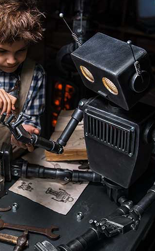

The first case of neural networks was in 1943, when neurophysiologist Warren McCulloch and mathematician Walter Pitts wrote a paper about neurons, and how they work. They decided to create a model of this using an electrical circuit, and therefore the neural network was born.
Robot Skills
To be effective as both specialists and generalists — as well as being both practical and investigative — roboticists need a good set of supporting skills. In this list we've taken 25 career skills and grouped them into 10 essential skills for roboticists.
Emotion
62%
Active Learning
90%
Math
95%


- 